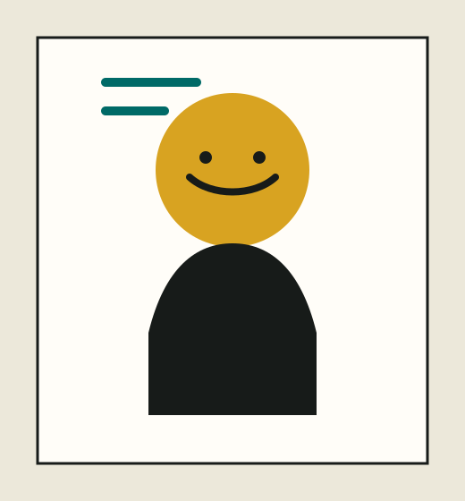
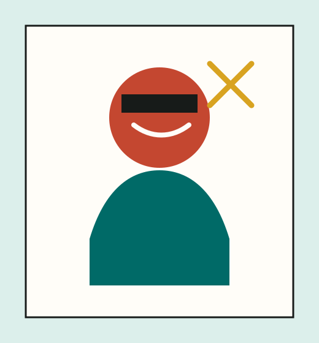
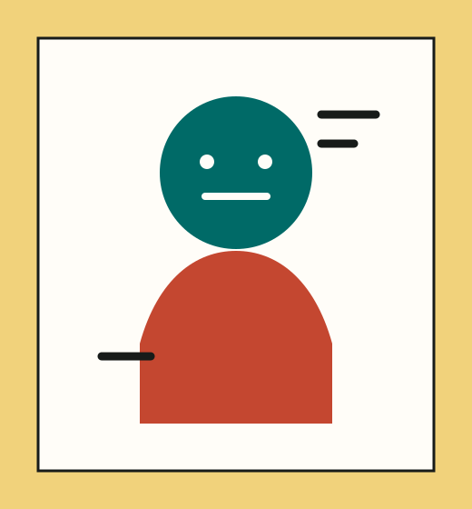
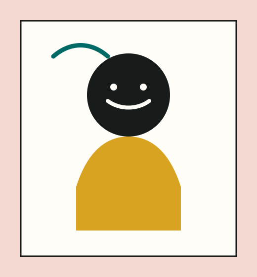

可触交互
触觉反馈、实体控制、柔性界面与多模态交互原型。

可触界面实验室关注数字信息如何通过材料、形态、触觉反馈和空间行为被人感知与操作。我们将交互设计、工业设计、服务设计、智能硬件与计算媒介结合，探索下一代具身交互体验。
实验室以“从屏幕到触感、从工具到场景、从原型到真实使用”为线索，服务于健康照护、文化体验、教育创新、公共空间与智能产品等方向。
触觉反馈、实体控制、柔性界面与多模态交互原型。
将传感、驱动、光影与材料实验转化为体验媒介。
面向展陈、城市服务与公共场景的交互系统设计。
以用户研究、原型评估和论文写作沉淀方法。
参考站点的成员网格结构，这里先放导师、博士生与硕士生的头像占位。后续可替换真实照片和研究方向。

实验室负责人 / 交互设计

触觉反馈与智能材料

空间媒介与展陈交互

智能硬件与原型开发
以下为样例项目占位。后续可替换为导师课题、学生作品、竞赛成果、企业合作与展览项目。

面向视障与银龄人群的多感官城市信息导览原型。

探索织物、压力传感与可穿戴设备中的自然控制方式。

将纹样、器物与地方叙事转译为可触摸、可互动的展览媒介。

以 Arduino、织物传感、投影映射和快速用户测试搭建一周制原型冲刺。
论文/会议占位：可替换为正式题名、作者、期刊或会议、DOI 链接。
中文论文占位：适合放课程论文、核心期刊、设计学年会或展览图录。
工具包/专利/软件著作权占位：记录原型、方法、代码仓库与媒体报道。
欢迎对交互设计、智能硬件、材料实验、用户研究、前端开发与设计理论感兴趣的同学联系。也欢迎企业、博物馆、医院、公共机构与我们开展联合课题和原型验证。